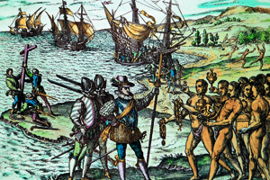
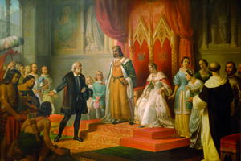
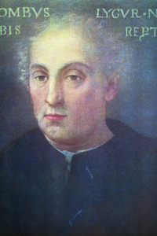

Lezione 10  Le Scoperte Geografiche
Le Scoperte Geografiche

-
255
240
-
235
290
-
215
380
-
215
415
-
190
465

HISPANIOLA
Sbarcato ad Hispaniola (l’odierna Haiti) Cristoforo Colombo viene accolto dai nativi con doni e festeggiamenti. L’episodio è qui raffigurato dall’incisore ed editore fiammingo Theodor de Bry nell’opera in molti volumi che dedicò, alla fine del Cinquecento, alla descrizione delle nuove terre scoperte e colonizzate nel corso del XVI secolo.LA RAYA
1494: Trattato di Tordesillas. Viene stabilita una linea di demarcazione tra i possedimenti spagnoli, a ovest della linea, e quelli portoghesi, a est.COLOMBO
1493: Secondo viaggio di Colombo per esplorare i Caraibi. Colombo parte in spedizione con 17 caravelle e 1200 uomini per creare insediamenti permanenti e sfruttare la manodopera degli indiani locali.
PALOS
Dopo il rifiuto del re del Portogallo Cristoforo Colombo presenta il suo progetto di una via breve per raggiungere le Indie ai reali di Spagna nel 1486: il colloquio è qui raffigurato dal pittore ottocentesco Juan Cordero. Inizialmente ostacolata e ritenuta irrealizzabile, la spedizione può finalmente partire nel 1492.
GENOVA
“Cristoforo Colombo, lo scopritore dell’altro mondo, un mondo meraviglioso ed ignoto a tutte le epoche precedenti”: sono parole dello storico cinquecentesco Paolo Giovio, che vuole questo dipinto degli inizi del XVI secolo nel suo “Museo” dove raccoglie i ritratti dei più importanti letterati, sovrani e condottieri a partire dall’Antichità fino ai suoi contemporanei. Giovio insiste molto sulle origini italiane, e nella fattispecie liguri, del navigatore.